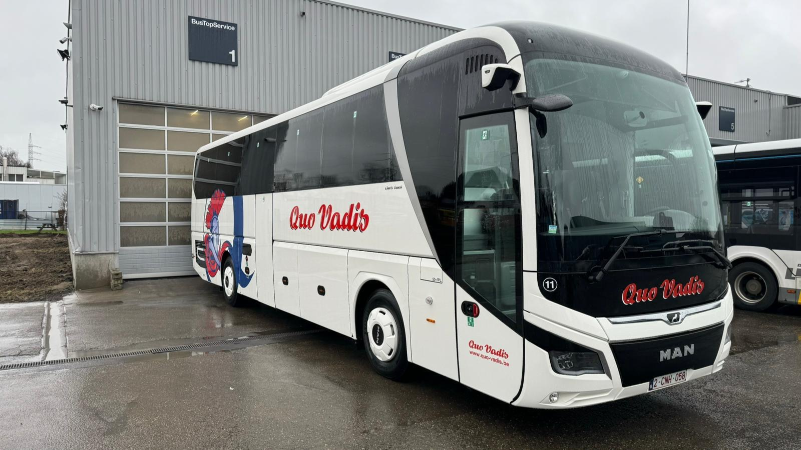
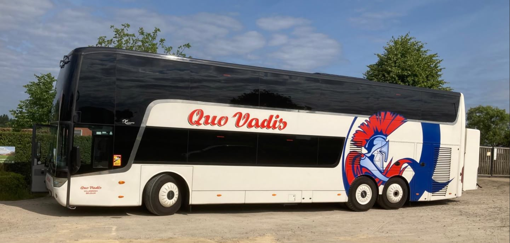

Veilig reizen
Uw veiligheid is onze prioriteit
Van daguitstappen tot meerdaagse reizen,
wij brengen u graag naar uw bestemming.
QUO VADIS


ONZE DIENSTEN
Comfortabel vervoer voor scholen, verenigingen, bedrijven en groepen.
Autocartransport voor rondreizen en internationale groepen.
Professionele ondersteuning voor internationale reisorganisaties.
Vlot en verzorgd vervoer voor zakelijke verplaatsingen.
OVER ONS
Quo Vadis is gevestigd in Willebroek en richt zich op professioneel personenvervoer en internationale groepsreizen.
De centrale ligging langs de A12 tussen Brussel en Antwerpen maakt Willebroek een praktische uitvalsbasis voor reizen in België en Europa.
QUO VADIS BV
De officiële algemene verkoopsvoorwaarden van Quo Vadis BV staan hieronder volledig weergegeven.
CONTACT
Vertel ons over uw groep, route en reisdata.
LOCATIE
Quo Vadis · Hoeikensstraat 11 · 2830 Willebroek · België